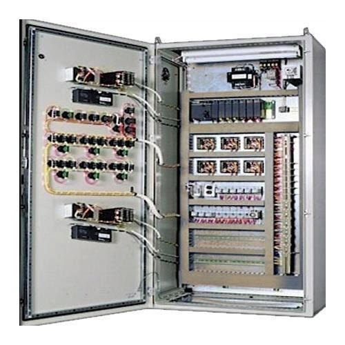
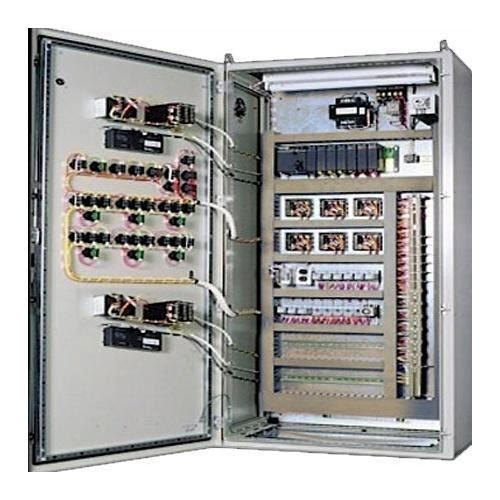

Nuclear Turbine Control Panel
The Nuclear Turbine Control Panel is a crucial part of a nuclear power plant, responsible for managing the turbine systems that convert thermal energy into mechanical energy and subsequently into electrical energy. Here’s a detailed overview of its components, functions, and usage:
Components
1. Control Consoles:
- Operator Interface:This includes touchscreens, buttons, dials, and switches through which operators interact with the system. The interface displays real-time data and allows manual control of the turbine systems.
- Displays and Monitors:High-resolution screens show critical information, such as turbine speed, temperature, pressure, and power output.
2. Sensors and Instrumentation:
- Temperature Sensors:Monitor the temperature of the steam and turbine components to ensure they operate within safe limits.
- Pressure Transducers:Measure steam pressure in the turbine system, which is essential for optimizing performance.
- Flow Meters:Track the flow rate of steam to the turbines, which affects their efficiency and output.
3. Control Modules:
- Digital Control Systems:These handle automated control functions, data processing, and integration with other plant systems.
- Relay Systems:Manage electrical signals and commands to actuate physical components, like valves and motors.
4. Alarm and Notification Systems:
- Warning Lights and Alarms:Indicate abnormal conditions or operational issues that require immediate attention.
- Notification Systems:Provide audio and visual alerts to operators when predefined thresholds are exceeded.
5. Data Logging and Analysis:
- Data Storage:Keeps historical records of turbine performance and operational parameters for analysis and regulatory compliance.
- Trend Analysis Tools:Help operators and engineers analyze performance trends and predict potential issues.
6. Communication Systems:
- Intercoms and Radios:Facilitate communication between the control room and field operators or other plant personnel.
- Remote Monitoring Capabilities:Allow off-site monitoring and control in some modern systems.
Functions
1. Operational Control:
- Start/Stop Operations:Operators can start or stop turbines based on plant requirements and operational conditions.
- Adjustments:**Fine-tune parameters such as steam flow, turbine speed, and pressure to optimize performance and efficiency.
2. Performance Monitoring:
- Real-Time Data:Continuous monitoring of turbine parameters like speed, temperature, and pressure to ensure they are within safe operational limits.
- Performance Metrics:Track power output and efficiency metrics to ensure that the plant is operating at optimal levels.
3. Safety Management:
- Emergency Shutdown:Initiate emergency procedures if critical thresholds are exceeded or if a safety issue arises.
- Alarm Response:Respond to alarms and warnings by assessing the situation and taking corrective actions as needed.
4. Maintenance and Diagnostics:
- Predictive Maintenance:Use data analysis to predict and prevent potential failures or maintenance needs.
- Diagnostics:Identify and troubleshoot issues with the turbine system based on real-time data and historical trends.
Usage
1. Operational Procedures:
- Routine Operations:Daily operation involves monitoring turbine performance, making adjustments as needed, and responding to alarms or anomalies.
- Startup/Shutdown Procedures:Carefully controlled procedures for starting up and shutting down the turbine to ensure safety and system integrity.
2. Safety Protocols:
- Emergency Protocols:Follow established procedures for emergency situations, including rapid shutdown of the turbine and notification of relevant personnel.
- Regular Drills:Conduct regular drills to ensure that operators are familiar with emergency procedures and can respond effectively.
3. Training:
- Operator Training:Comprehensive training programs for operators to familiarize them with the control panel’s features, functions, and emergency procedures.
- Simulation Exercises:Use of simulators to practice responses to various operational scenarios and emergencies.
4. Maintenance:
- Routine Checks:Perform regular maintenance checks and calibration of sensors and control systems to ensure reliable operation.
- Upgrades:Implement system upgrades and improvements to incorporate new technologies and enhance performance and safety.
The Nuclear Turbine Control Panel is integral to the efficient and safe operation of a nuclear power plant. It combines sophisticated technology with expert human oversight to manage the complex processes involved in converting nuclear energy into electrical power.